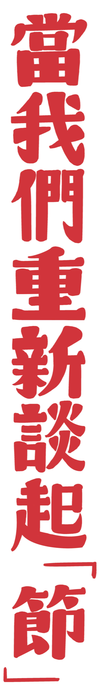
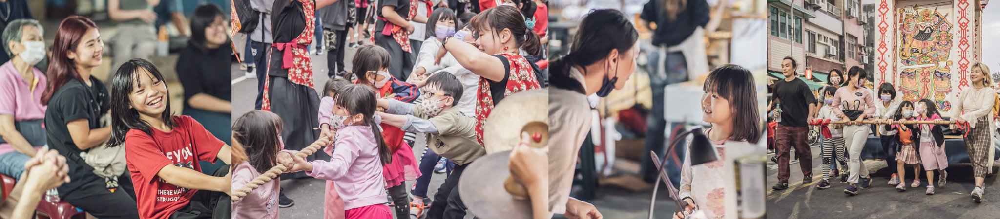
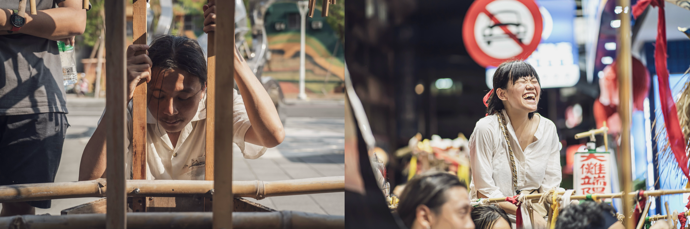

節日，存在於我們的生活中，像一種報時，提醒著——月又圓了、年又新了，也像是一種約定，守著一方不可抹滅的記憶，像滿街的燈籠或者一桌子的微笑。節日，不只是單純的自然規律，也不只是農耕社會遺留的產物，它更靠近人們，它打破人與人之間的藩籬，就像詩詞中描寫的：「千門開鎖萬燈明，正月中旬動地京。」無論男女老少富貧，人們皆打開了門鎖、點起了燈，共度此刻。
節日重要的是看見，看見跟自己不同的人們，也看見你們擁有著共同的事物。尤其當我們住在城市之中，關起門來，可能連鄰居都不知道是誰，更不覺得自己跟路邊的阿伯有什麼關係，自己只顧好自己的生活。於是在繁華的背後，我們看見了龐大的落寞。
當代的節日更像是空閒的假期，人們在其中自行填入喜好，跟日常的生活並沒有什麼分野。但如果有一個別於日常的、神聖的時間，在那樣的時間裏頭，你發現路邊的阿伯會跟你唱相同的歌，很吵的鄰居小孩會跟你跳相同的舞，那麼再回到日常的時間之後，是不是就會有不一樣的眼光去看待生活？從非日常回望日常，便能夠意識到我們是如何生活的。
另外，在文化面上來看，我們得重新思辯「節」究竟對我們來說是什麼。
節不是新穎的東西，總會從祖輩那裡聽見他們小時候的記憶，也會從一些文本與詩句中窺見過去節日的場景。這些留下的東西給了我們一個想像，也讓節日有了一定的基調，就像我們不可能在清明節歡慶，也不可能在端午節望月思人。但既有的過節方法，對當今在城市生活的人們或許已經不全然地適用，所以我們要做的並不是復刻過去，我們要作一個能夠與當代人產生意義的「節」。

過去一年來，我們舉辦了上元節、清明節、端陽節與仲秋節。在上元節的時候，有了「東風夜放花千樹」的想像，我們做出可以在城市行走的燈車，尋找一個不分男女老少可以同歡慶的時刻。在清明節，我們去重新談起牌位、歷史與記憶，問起什麼是必須記得的？什麼是值得傳遞給他者一起關心的？想要喚醒某些遺忘的敬意。在端陽節，有「敕令五月五日午時書破官非口舌鼠蟻蛇蟲一切盡消除」的咒令，我們問起當代人的困難是什麼？有什麼是需要消除的？想要讓人有一個機會可以直面自己的困難。在仲秋節，總會想起「但願人長久，千里共嬋娟」，於是我們在月圓時相聚、談起陰翳、歌與詩詞。
在這些節日裡，我們得以擁有不同的感受。我們不需要一年四季都處在敬意、虔誠的狀態之中，但也不希望人們一年四季都沒有這樣的情緒。這並不是一輩子有一次體驗就夠的事情，節日年復一年地提醒著我們內在有某一種，常被我們遺忘的情感。
當談及節日，就有個年復一年的假設，過節並不是單次性的活動。只要年年在走，必有節節要過，我們有未來的想像，在這樣的想像裡面，我們過的是天干地支的時間，從癸亥回到甲子不停地循環，而不是西元元年開始持續往前跑、最終迎向末日。對時間的想像甚至是超越個人的，是一代代接續的，當我們不再以一個人的一生為時間的單位，那麼節日永遠不會終了，我們不會把自己的生命進行一種斷裂，即使最後我們去世，仍有一些東西被留在世間。
節日，之於我們便是如此地重要與必要，於是我們「作節」。如果說「過節」是一種嵌入人們生活中的行為，那麼在節日已經殘存空殼的現今，我們的行為更像是「作節」，我們更刻意更用力地想要找到別於當今的生活模式。在有節的日子裡，我們必定會想到明年、後年……作節會變成生活的一部分，甚至如果時間是一代又一代的，節是可以傳承的，那麼有天那些尚未出生的孩子便不必再苦惱什麼是「我們」的文化，可以沒有疑慮地說這是「我們」的，可以自豪於「我們」擁有的東西，如果那天可以到來的話，那麼他們便可以平凡的、不用刻意的「過節」了吧。
